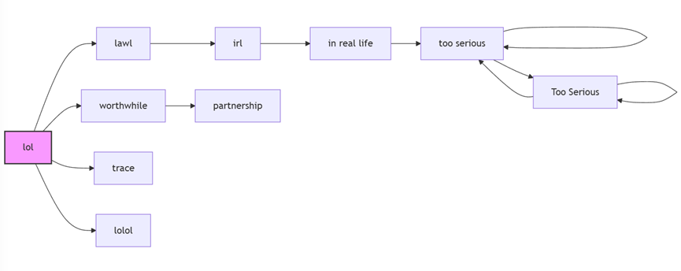
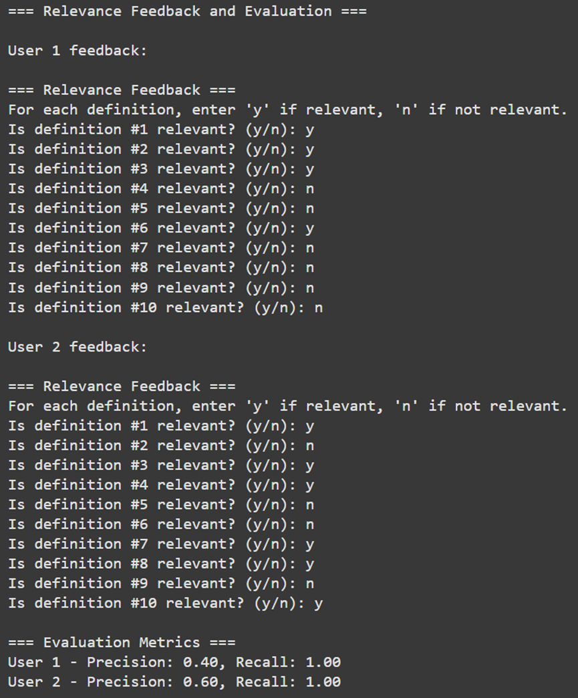

שאלה 1
בחרנו להתמקד באתר Urban Dictionary שהוא מילון אינטרנטי שמסביר מילים, סלנגים וביטויים שאנשים משתמשים בהם בחיי היומיום ובאינטרנט. אפשר למצוא שם מונחים שאינם נמצאים במילונים רגילים, כמו מילים מצחיקות, כינויים, או ביטויים נפוצים באינטרנט. אנשים יכולים להוסיף הסברים משלהם למילים, לכתוב דוגמאות איך משתמשים בהן, וגם להצביע אם הם אוהבים את ההגדרה או לא. האתר מתאים במיוחד לאנשים שרוצים להבין ביטויים או מונחים פופולריים בתרבות היום-יום.
הקישור לאתר: https://www.urbandictionary.com/
שאלה 2
Query 1: lmao "or" can't
תוצאה: מצטערים, לא מצאנו: lmao "or" can't
מידע נדרש: הגדרה של "lmao” או “can't".
חיפושים מתקדמים הם בעיה באתר הזה.
Query 2: What slang words from the early 2000s are
still commonly used today?
תוצאה: מצטערים, לא מצאנו: אילו מילים סלנג משנות ה-2000 עדיין בשימוש
נפוץ היום?
מידע נדרש:
רשימה של מילות סלנג פופולריות משנות ה-2000 עם סטטיסטיקות שימוש
עדכניות.
דוגמאות למילים אלו בתקשורת מודרנית או בשיחות.
תובנות לגבי למה מילים מסוימות נמשכו בעוד אחרות נעלמו.
Query 3: newest slang
תוצאה: הגדרה מילולית של “סלנג החדש ביותר”
מידע נדרש:
רשימה של מילים סלנג שהיו שיוצרו לאחרונה (בשנה האחרונה).
הגדרות ודוגמאות כיצד הן משמשות בשיחות.
שאלה 3
https://colab.research.google.com/drive/1TeyT44cEsJmIm4XTSvmia1N69QX6pKg8?usp=sharing
שאלה 4
Urban Dictionary API:
אנו שולפים נתונים מ-API של Urban Dictionary, ואז מפענחים את התוצאות
ב-JSON על מנת להוסיף אותן ל-cache המקומי שלנו.
JSON Caching:
אנו שומרים את ה-definitions שנשלפו בקובץ urban_data.json על מנת למנוע
קריאות חוזרות ל-API - ולזרז חיפושים עתידיים.
splitting queries by "or":
הוספנו תכונה שבה המשתמש יכול לקבל definitions מרובות בשאילתה אחת על
ידי הוספת "או" בין כל שאילתה, לדוגמה: harry potter "or" john snow .
אנו נבצע חיפוש עבור "harry potter" ולאחר מכן עבור "john snow". אם
המשתמש לא הוסיף "או", נבצע חיפוש על כל השאילתה.
Custom Ranking Logic:
במקום להשתמש בשיטות דירוג מסורתיות כמו TF-IDF, יישמנו נוסחת דירוג
מותאמת אישית:
score = (likes - dislikes) - 0.1 × (current_year -
year_of_post)
Search for New Slangs:
אנו יכולים להשתמש ב-API על מנת להחזיר 7 הגדרות רנדומליות, ואז נשתמש
ב-API עשר פעמים כדי לקבל סך הכל 70 הגדרות, ולאחר מכן נוכל להחזיר את
המונחים החדשים (שנתיים אחרונות) עם הדירוג הגבוה ביותר למשתמש.
Search using words.txt:
אם אנו רוצים לבצע חיפוש בכמות גדולה, אנו יוצרים קובץ בשם words.txt ואז
בכל שורה כותבים query. לאחר מכן הקוד יעבור על כל שורה ויביא
definitions עבור כל query בקובץ.
שאלה 5
זמן נמדד (25 שניות) לעיבוד כל השאילתות בקובץ words.txt.
על מה זה תלוי:
מספר מונחים: אם קובץ words.txt מכיל שורות רבות או תתי-שאילתות מופרדות
ב-"or", כל אחת מהן חייבת להוציא מה-Urban Dictionary.
זמן עיבוד תלוי גם בחיבור הרשת, כי כל בקשה ל-API של Urban Dictionary
תלויה במהירות הרשת ובזמן התגובה של ה-API.
תלוי גם בזיכרון מטמון: ברגע שמונח נמצא בזיכרון מטמון בקובץ
urban_data.json, זה יהיה מיידי בפעם הבאה. ללא נתונים במטמון - יותר
קריאות יתקיימו ל-API.
האם אפשר לשפר זאת?
כן, אפשר להשתמש בריבוי תהליכים ב-Python כדי להאיץ את הבקשות ל-API.
בנוסף, שפה מהירה יותר כמו C++ עשויה לעזור בעיבוד הטקסט, אך בדרך כלל
למשימות רשת מקביליות עוזרת יותר מאשר שינוי שפה.
הפחתת קריאות ה-API גם עוזרת (למשל, אם ה-API היה תומך בשאילתות מרובות
בבקשה אחת).
שאלה 6
Term Details: "use"
- 1
- 6
- 16
- 26
- 27
- 29
- 34
- 37
- 38
- 39
- 46
- 48
- 51
- 53
- 61
- 65
- 70
- 74
- 83
- 91
- using
- uses
- used
- use
שאלה 7
חישוב TF-IDF עבור השאילתה 'quantum'
| Term | Doc ID | TF | DF | IDF | TF-IDF |
|---|---|---|---|---|---|
| quantum | 0 | 1.000000 | 3 | 3.188417 | 3.188417 |
| quantum | 1 | 0.000000 | 3 | 3.188417 | 0.000000 |
| quantum | 2 | 2.098612 | 3 | 3.188417 | 6.691250 |
| quantum | 3 | 0.000000 | 3 | 3.188417 | 0.000000 |
| quantum | 96 | 0.000000 | 3 | 3.188417 | 0.000000 |
שאלה 8
כן, בעיקרון, כל טקסט הגדרה יכול להכיל מספר הפניות [linked_term] לדפים
אחרים.
אם הגדרה מסוימת מתייחסת להרבה מונחים אחרים, ההגדרה הזאת יכולה להיחשב
כחיבור פוטנציאלי.
הגדרה שאליה הרבה דפים אחרים מקשרים (מזכירים עם הפניות [סוגריים
מרובעים]) יכולה להיחשב כרשות (authority).
דוגמה:
אם “הארי פוטר (הגדרה הכי ישנה)” מתייחסת ל-[מכשף], [קסם], [הוגוורטס],
זה hub פוטנציאלי.
אם מספר הגדרות מ-“מכשף,” “קסם,” “הוגוורטס,” “וולדמורט” מקשרות חזרה
ל-“הארי פוטר,” אז “הארי פוטר” עשוי להיות authority חזקה.
שאלה 9
הערה חשובה היא שלא השתמשנו בהגדרות שהוחזרו לצורך חישוב ה-PageRank כי זה בלתי אפשרי ולא מתאים לדרישות. במקום זאת, השתמשנו במילה שהמשתמש ביקש לחפש (למשל “lol”) כדי להרחיב למילים נוספות המקשרות בתוך התיאור של המילה שחיפשנו. זו המבנה של המילים:
הסיבה שהמבנה נראה כך היא כי לקחנו מילה מהקלט של המשתמש שהיא “lol” והרחבנו אותה להגדרות שונות, לכן זה נראה כמו קו ישר. בנוסף, הגבלנו את הקוד לחפש רק 10 מילים שמקשרות אחת לשנייה.
להלן טבלת ה-PageRank לאחר 3 איטרציות (כדוגמת התמונה שסיפקת):
| Word | PageRank Value |
|---|---|
| too serious | 0.4446 |
| Too Serious | 0.2927 |
| in real life | 0.0830 |
| irl | 0.0394 |
| partnership | 0.0394 |
| worthwhile | 0.0211 |
| lawl | 0.0211 |
| trace | 0.0211 |
| lolol | 0.0211 |
| lol | 0.0167 |
שאלה 10
אנחנו לא יכולים לחשב Recall כי אנחנו משתמשים ב-API שמחזיר את כל ההגדרות הרלוונטיות, ולכן אנחנו מחזירים את כל ההגדרות, אך מציגים רק את 10 ההגדרות המובילות באמצעות מערכת הניקוד שלנו. למרות שאנחנו מציגים רק את 10 המובילות, בפועל אנחנו מחזירים את כל ההגדרות, ולכן זה 100%. בנוסף, אנחנו לא יכולים להציע שאילתה מתוקנת בגלל שהאתר שלנו הוא אתר מילון, ולכן אנחנו מניחים שהמשתמש הזין את השאילתה הנכונה ולא יכולים לשנות אותה.
=== Relevance Feedback and Evaluation ===
User 1 feedback:
=== Relevance Feedback ===
For each definition, enter 'y' if relevant, 'n' if not relevant.
Is definition #1 relevant? (y/n): y
Is definition #2 relevant? (y/n): y
Is definition #3 relevant? (y/n): y
Is definition #4 relevant? (y/n): n
Is definition #5 relevant? (y/n): n
Is definition #6 relevant? (y/n): n
Is definition #7 relevant? (y/n): y
Is definition #8 relevant? (y/n): n
Is definition #9 relevant? (y/n): n
Is definition #10 relevant? (y/n): n
User 2 feedback:
=== Relevance Feedback ===
For each definition, enter 'y' if relevant, 'n' if not relevant.
Is definition #1 relevant? (y/n): y
Is definition #2 relevant? (y/n): n
Is definition #3 relevant? (y/n): y
Is definition #4 relevant? (y/n): y
Is definition #5 relevant? (y/n): n
Is definition #6 relevant? (y/n): n
Is definition #7 relevant? (y/n): y
Is definition #8 relevant? (y/n): y
Is definition #9 relevant? (y/n): n
Is definition #10 relevant? (y/n): y
=== Evaluation Metrics ===
User 1 - Precision: 0.40, Recall: 1.00
User 2 - Precision: 0.60, Recall: 1.00
